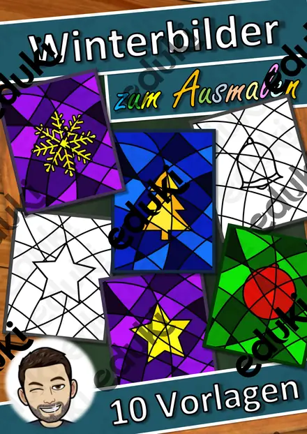

Igel im Laubnest – Klappnest basteln mit Sachtext Winterschlaf, 3-fach differenziert (Tiere im Herbst, Klasse 1/2)

Der Kürbis von innen – Klapp-Kürbis basteln und beschriften, 3-fach differenziert (Halloween/Herbst, Klasse 1/2)

Halloween-Handpuppen – Bastelvorlage mit Sachtext und Puppentheater, 3-fach differenziert (Klasse 1/2)

Fingerpuppen Wintertiere – Bastelvorlage mit Sachtext und Sprechaufgaben, 3-fach differenziert (Klasse 1/2)

Wimpelkette Winter – Bastelvorlage mit Wintermotiven, Buchstaben WINTER und eigenen Wimpeln, 3-fach differenziert (Klasse 1–4)

Advents-Häuserstadt – Klassen-Adventskalender zum Basteln mit 24 Adventsaufgaben, 3-fach differenziert (Klasse 1–4)

Fensterlaterne Sankt Martin – Laterne basteln mit Lesetext zur Legende, 3-fach differenziert (Klasse 1–3)

Gespensterhaus aus meiner Hand – Halloween-Bastelvorlage mit Lesen und Schreiben, 3-fach differenziert (Klasse 1/2)

Salzteig-Anhänger – formen, trocknen, bemalen – Lesespurgeschichte mit Rätselaufgaben (Klasse 1)

Formen in der Natur – Lesespurgeschichte mit Rätselaufgaben (Klasse 1)

Tiere in der Kunst – Lesespurgeschichte mit Rätselaufgaben (Klasse 1)

Wolken, Wind und Wetter malen – Lesespurgeschichte mit Rätselaufgaben (Klasse 1)

Muster entdecken – Streifen, Punkte, Flecken – Lesespurgeschichte mit Rätselaufgaben (Klasse 1)

Punkt, Linie, Fläche – die Bausteine jedes Bildes – Lesespurgeschichte mit Rätselaufgaben (Klasse 1)

Blätterdruck und Herbstfarben – Lesespurgeschichte mit Rätselaufgaben (Klasse 1)

Herbst-Forscher-Kamera – Papier-Kamera zum Laminieren mit Foto-Aufträgen und Fotoalbum, 3-fach differenziert (Klasse 1/2)

Gemeinschaftsposter Winter „Gemeinsam leuchten wir“ – Klassenposter aus 24 Teilen, 3-fach differenziert (Klasse 1–4)

Ausmalbild Schulliebe - Ich liebe Schule

Oster-Ausmalbilder, Ausmalbilder für Ostern - Klassenzimmergestaltung

Ausmalbild Silvester - Kunst Ausmalbilder Neujahr - Ferien #Glückspilze24 #Glückskekse25 #edukiknaller24

Sternbilder Projektion - Materialpaket - Sternbildsucher #edukiknaller2021

Abstrakte Winterbilder - Winter-Bilder zum Ausmalen - Winterkunst - Klassenzimmerdekoration - Fensterbilder - Ausmalbilder

Sternbildsucher - Projektor Sternzeichen Wassermann

Sternbildsucher - Projektor Sternzeichen Fische

Erster Schultag - Schultasche

Kunst Ostereier zum Bemalen (auch Vertretung)
Keine Materialien gefunden – versuch einen anderen Suchbegriff oder Filter.